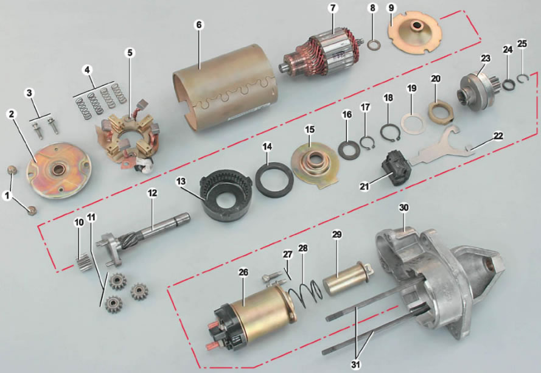

СтартерНа автомобиле установлен стартер типа 5702.3708*, который представляет собой четырехполюсный электродвигатель с возбуждением от постоянных магнитов, оборудованный приводом включения и тяговым реле. * На часть автомобилей может быть установлен стартер BOSCH0001108203 Вал якоря передает вращение на вал привода через планетарный редуктор. Планетарные шестерни редуктора вращаются на игольчатых подшипниках. Привод стартеров состоит из ведущей шестерни и обгонной муфты. Привод может передвигаться по спиральным шлицам вала привода. Тяговое реле установлено на корпусе электродвигателя и предназначено для дистанционного коммутирования большого тока, потребляемого стартером при запуске двигателя, и механического соединения привода стартера с зубчатым венцом маховика двигателя. Катушка реле имеет две обмотки, втягивающую и удерживающую. При повороте ключа зажигания в положение П («стартер») на управляющий вывод тягового реле «50», а с него на обе обмотки реле от аккумуляторной батареи подается напряжение. Под воздействием магнитного поля металлический сердечник тягового реле, преодолевая усилие возвратной пружины, втягивается внутрь катушки. При этом он приводит в движение рычаг привода стартера. Рычаг привода своей подковообразной вилкой выдвигает привод стартера, вводя ведущую шестерню в зацепление с зубчатым венцом маховика двигателя. Одновременно с этим медная контактная пластина, расположенная в пластмассовой крышке тягового реле, замыкает контактные болты. Через обмотки якоря стартера начинает протекать ток, якорь — вращаться, осуществляя запуск двигателя. Отрицательный вывод втягивающей обмотки реле соединен с «массой» через обмотки якоря стартера. После замыкания контактных болтов через эту обмотку перестает протекать ток и сердечник тягового реле удерживается только одной обмоткой, это позволяет уменьшить нагрев обмоток реле и сократить расход электроэнергии в момент запуска двигателя. Детали стартера: 1 — гайки крепления задней крышки; 2 — задняя крышка; 3 — винты крепления щеточного узла; 4 — пружины щеток; 5 — щеточный узел; 6 — статор (с магнитами); 7 — якорь; 8 — упорная шайба; 9 — опора вала якоря; 10 — центральная шестерня редуктора; 11 — планетарные (сателлитные) шестерни редуктора; 12 — вал привода; 13 — внешняя шестерня редуктора с внутренними зубьями; 14 — уплотнительное кольцо; 15 — опора вала привода; 16 — упорная шайба; 17 — стопорное кольцо вала привода; 18 — стопорное кольцо муфты рычага привода; 19 — шайба; 20 — муфта рычага привода; 21 — опора рычага привода; 22 — рычаг привода; 23 — привод; 24 — кольцо ограничения хода привода; 25 — запорное кольцо ограничителя; 26 — тяговое реле стартера; 27 — винты крепления тягового реле; 28 — возвратная пружина; 29 — сердечник тягового реле; 30 — передняя крышка; 31 — стяжные шпильки Обгонная роликовая муфта привода передает вращение только в одну сторону от стартера на маховик. После запуска двигателя, когда обороты коленчатого вала резко возрастают, муфта предохраняет стартер от разрушения. После того как водитель отпускает ключ выключателя (замка) зажигания, на вывод тягового реле перестает поступать управляющее напряжение; электромагнитное поле, удерживающее якорь, исчезает. Рычаг привода под воздействием пружины перемещает привод стартера назад и выводит ведущую шестерню из зацепления с венцом маховика. Одновременно с этим размыкаются силовые контакты, подающие ток к обмоткам двигателя стартера. Стартер - самый мощный потребитель электрической энергии на автомобиле. При запуске двигателя ток, потребляемый стартером, может достигать более 400А Поэтому все электрические соединения между аккумуляторной батареей и стартером должны иметь надежный контакт. |